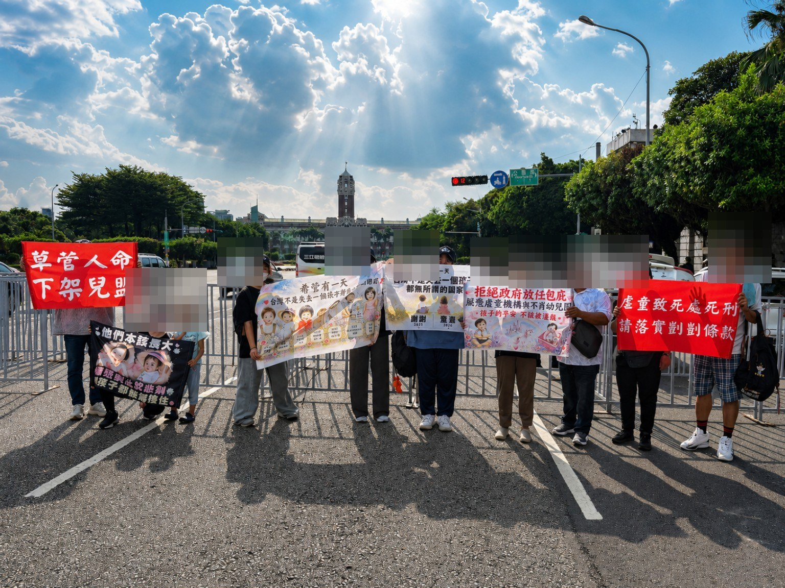

15 photosAnti-drug driving and anti-drunk driving. Ketagalan Boulevard Parade
Records of the activities of the Child Protection Action Alliance and on-site supporters.
View photo album →Organize on-site photos according to activities. Photos have undergone necessary privacy treatment before being made public.

15 photosRecords of the activities of the Child Protection Action Alliance and on-site supporters.
View photo album →